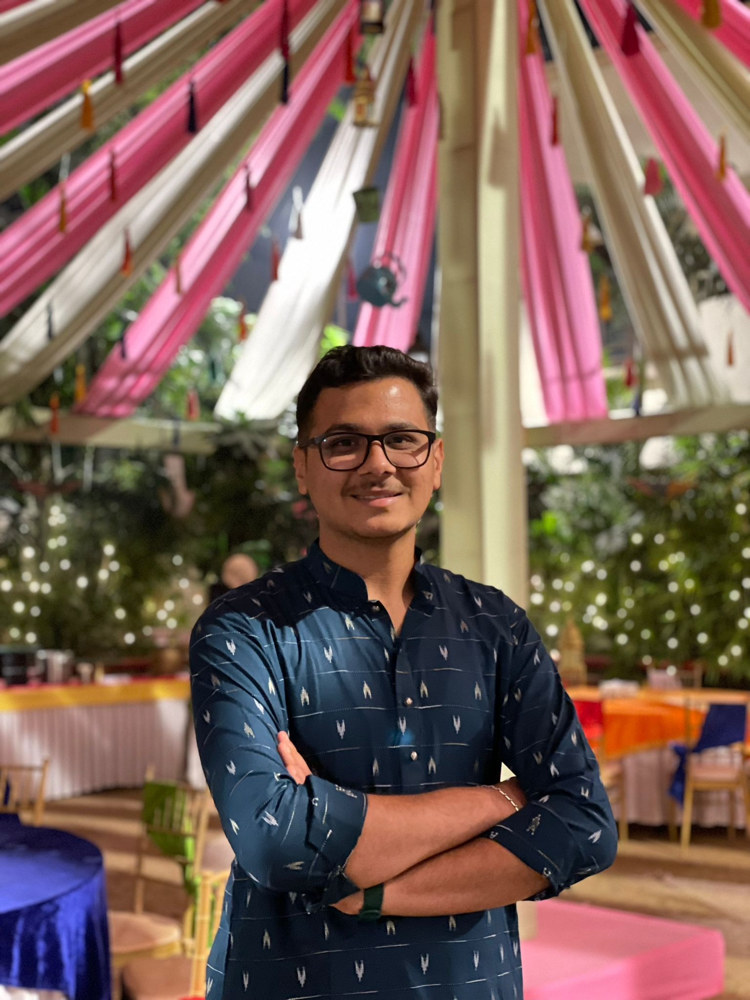

Kalpit Sharma

Summary :
Hardworking Student offering part-time work experience and extensive
knowledge of core subject matter. Meticulous and detail-oriented with excellent
observational, organizational and communication skills. Driven to learn quickly,
advance computer proficiency and training in industry operations. Solid
background in field and office settings supporting team needs. Flexible and
hardworking team player focused on boosting productivity and performance with
conscientious and detail-oriented approaches.
Education :
- UNIVERSITY INSTITUTE OF TECHNOLOGY, RGPV
Shivpuri, MP | BTech in Computer Science & Engineering
Currently with 8.36 CGPA
-
ST. BENEDICT’S SCHOOL
Shivpuri, MP | Intermediate in PCM 85 %
-
ST. BENEDICT’S SCHOOL
Shivpuri, MP | Matriculate 88 %
Work Experience :
-
ITXPERTS
Intern | July 2022 - September 2022
-
NATIONAL POWER TRAINING INSTITUTE
Intern | June 2022 - July 2022
-
NBLIK
Intern | January 2022 - February 2022
Skills :
- Quality Control
- Project Management
- Good Communication Skills
- Team Collaboration
- Workflow Optimization
- Database Management
- C++
- Python
- HTML
- PHP
- CSS
- Javascript
- Bootstrap
- Wordpress
- MERN
Certifications :
- Python Training at Itxperts - August 2022
- Face Recognition, GUVI - May 2021
- Responsive Web Design, FreeCodeCamp - October 2020 - November 2020